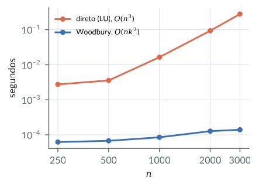
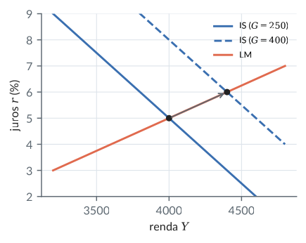
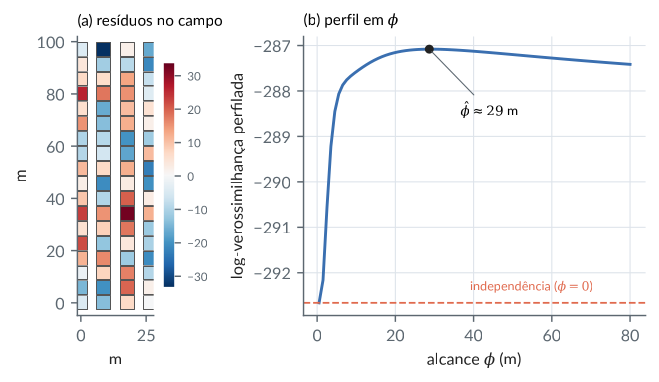
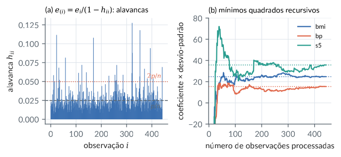
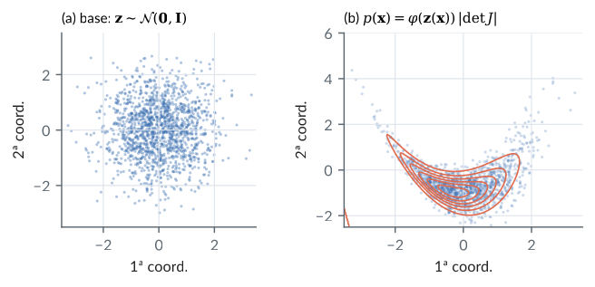
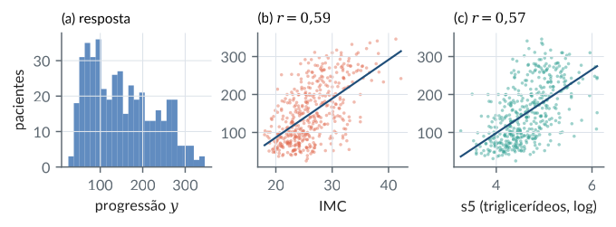

3. Determinantes, inversas e matrizes particionadas
Material reprodutível do Capítulo 3 do livro.
Exemplos
Determinante pela fórmula de Leibniz e suas propriedades
R/cap03/01_determinantes.R
# Cap. 3 -- Determinante pela fórmula de Leibniz e suas propriedades
permutacoes <- function(n) { # todas as permutações de 1..n
if (n == 1) return(matrix(1, 1, 1))
P <- permutacoes(n - 1)
do.call(rbind, lapply(1:n, function(k) cbind(k, ifelse(P >= k, P + 1, P))))
}
sinal <- function(s) { # (-1)^(número de inversões)
inv <- sum(outer(seq_along(s), seq_along(s), "<") & outer(s, s, ">"))
(-1)^inv
}
det_leibniz <- function(A) {
P <- permutacoes(nrow(A))
sum(apply(P, 1, function(s) sinal(s) * prod(A[cbind(seq_along(s), s)])))
}
set.seed(3)
A <- matrix(round(rnorm(16), 2), 4); B <- matrix(round(rnorm(16), 2), 4)
c(leibniz = det_leibniz(A), lapack = det(A))
c(det_AB = det(A %*% B), produto = det(A) * det(B)) # det(AB) = det(A) det(B)
c(det_At = det(t(A)), det_A = det(A)) # det(A') = det(A)
A2 <- A; A2[c(1, 3), ] <- A2[c(3, 1), ]; c(troca = det(A2)) # troca de linhas muda o sinal
# |det| = volume: paralelogramo gerado por (3, 1) e (1, 2)
V <- cbind(c(3, 1), c(1, 2)); c(area = abs(det(V)))
# Gram: sqrt(det(X'X)) = área do paralelogramo gerado por duas colunas em R^3
X <- cbind(c(1, 0, 1), c(0, 2, 1)); sqrt(det(crossprod(X)))Saída
leibniz lapack
-0.2736213 -0.2736213
det_AB produto
0.07800561 0.07800561
det_At det_A
-0.2736213 -0.2736213
troca
0.2736213
area
5
[1] 3python/cap03/01_determinantes.py
"""Cap. 3 -- Determinante pela fórmula de Leibniz e suas propriedades."""
from itertools import permutations
from math import prod
import numpy as np
def sinal(s):
inv = sum(1 for i in range(len(s)) for j in range(i + 1, len(s)) if s[i] > s[j])
return (-1) ** inv
def det_leibniz(A):
n = len(A)
return sum(sinal(s) * prod(A[i, s[i]] for i in range(n)) for s in permutations(range(n)))
rng = np.random.default_rng(3)
A = np.round(rng.normal(size=(4, 4)), 2); B = np.round(rng.normal(size=(4, 4)), 2)
print(det_leibniz(A), np.linalg.det(A))
print(np.linalg.det(A @ B), np.linalg.det(A) * np.linalg.det(B))
print(np.linalg.det(A.T), np.linalg.det(A))
print(np.linalg.det(A[[2, 1, 0, 3]])) # troca de linhas: sinal oposto
V = np.array([[3, 1], [1, 2]]); print("área:", abs(np.linalg.det(V)))
X = np.array([[1, 0], [0, 2], [1, 1]]); print(np.sqrt(np.linalg.det(X.T @ X)))Saída
-3.9080438699999993 -3.9080438700000015
1.0830887218027145 1.0830887218027132
-3.9080438700000015 -3.9080438700000015
3.9080438700000015
área: 5.000000000000001
3.0000000000000004Inversa por Gauss-Jordan, pela adjunta e regra de Cramer
R/cap03/02_inversa.R
# Cap. 3 -- Inversa por Gauss-Jordan, pela adjunta e regra de Cramer
gauss_jordan_inv <- function(A) {
n <- nrow(A); M <- cbind(A, diag(n)) # [A | I]
for (j in 1:n) {
k <- which.max(abs(M[j:n, j])) + j - 1 # pivotamento parcial
if (abs(M[k, j]) < 1e-12) stop("matriz singular")
M[c(j, k), ] <- M[c(k, j), ]
M[j, ] <- M[j, ] / M[j, j]
for (i in setdiff(1:n, j)) M[i, ] <- M[i, ] - M[i, j] * M[j, ]
}
M[, (n + 1):(2 * n)] # [I | A^{-1}]
}
adjunta <- function(A) { # transposta da matriz de cofatores
n <- nrow(A); C <- matrix(0, n, n)
for (i in 1:n) for (j in 1:n) C[i, j] <- (-1)^(i + j) * det(A[-i, -j, drop = FALSE])
t(C)
}
A <- matrix(c(2, 1, 1,
1, 3, 2,
1, 0, 0), 3, byrow = TRUE)
Ainv <- gauss_jordan_inv(A)
round(Ainv, 4)
max(abs(Ainv - solve(A)))
max(abs(adjunta(A) / det(A) - Ainv)) # A^{-1} = adj(A) / det(A)
round(A %*% adjunta(A), 10) # = det(A) I
# Regra de Cramer para Ax = b
b <- c(4, 5, 6)
x_cramer <- sapply(1:3, function(j) { Aj <- A; Aj[, j] <- b; det(Aj) / det(A) })
rbind(cramer = x_cramer, solve = solve(A, b))Saída
[,1] [,2] [,3]
[1,] 0 0 1
[2,] -2 1 3
[3,] 3 -1 -5
[1] 8.881784e-16
[1] 8.881784e-16
[,1] [,2] [,3]
[1,] -1 0 0
[2,] 0 -1 0
[3,] 0 0 -1
[,1] [,2] [,3]
cramer 6 15 -23
solve 6 15 -23python/cap03/02_inversa.py
"""Cap. 3 -- Inversa por Gauss-Jordan, pela adjunta e regra de Cramer."""
import numpy as np
def gauss_jordan_inv(A):
n = len(A); M = np.hstack([A.astype(float), np.eye(n)])
for j in range(n):
k = j + np.argmax(np.abs(M[j:, j]))
if abs(M[k, j]) < 1e-12:
raise np.linalg.LinAlgError("matriz singular")
M[[j, k]] = M[[k, j]]
M[j] /= M[j, j]
for i in range(n):
if i != j:
M[i] -= M[i, j] * M[j]
return M[:, n:]
def adjunta(A):
n = len(A); C = np.zeros((n, n))
for i in range(n):
for j in range(n):
menor = np.delete(np.delete(A, i, 0), j, 1)
C[i, j] = (-1) ** (i + j) * np.linalg.det(menor)
return C.T
A = np.array([[2, 1, 1], [1, 3, 2], [1, 0, 0]], dtype=float)
Ainv = gauss_jordan_inv(A)
print(np.round(Ainv, 4))
print(np.abs(Ainv - np.linalg.inv(A)).max(), np.abs(adjunta(A) / np.linalg.det(A) - Ainv).max())
b = np.array([4.0, 5, 6])
x = [np.linalg.det(np.column_stack([b if k == j else A[:, k] for k in range(3)])) / np.linalg.det(A)
for j in range(3)]
print(np.round(x, 10), np.linalg.solve(A, b))Saída
[[ 0. 0. 1.]
[-2. 1. 3.]
[ 3. -1. -5.]]
8.881784197001252e-16 8.881784197001252e-16
[ 6. 15. -23.] [ 6. 15. -23.]Determinantes grandes: LU, log-determinante e estouro numérico
R/cap03/03_logdet.R
# Cap. 3 -- Determinantes grandes: LU, log-determinante e estouro numérico
set.seed(1)
n <- 1200
A <- diag(n) * 0.5 + matrix(rnorm(n * n, sd = 0.01), n) # det ~ 0.5^1200
det(A) # subfluxo: menor que o menor double
determinant(A, logarithm = TRUE) # log|det| e sinal, via LU
# log|det| como soma dos logaritmos dos pivôs da LU
lu <- Matrix::expand(Matrix::lu(A))
sum(log(abs(diag(as.matrix(lu$U)))))
n * log(0.5) # referência aproximadaSaída
[1] 0
$modulus
[1] -832.1341
attr(,"logarithm")
[1] TRUE
$sign
[1] 1
attr(,"class")
[1] "det"
[1] -832.1341
[1] -831.7766python/cap03/03_logdet.py
"""Cap. 3 -- Determinantes grandes: LU, log-determinante e estouro numérico."""
import numpy as np
import scipy.linalg as sla
rng = np.random.default_rng(1)
n = 1200
A = 0.5 * np.eye(n) + rng.normal(scale=0.01, size=(n, n))
print(np.linalg.det(A)) # subfluxo
print(np.linalg.slogdet(A)) # (sinal, log|det|), via LU
P, L, U = sla.lu(A)
print(np.sum(np.log(np.abs(np.diag(U)))), n * np.log(0.5))Saída
0.0
SlogdetResult(sign=np.float64(1.0), logabsdet=np.float64(-832.1824447962825))
-832.1824447962838 -831.7766166719343Complemento de Schur, inversa particionada e identidade de Woodbury
R/cap03/04_schur_woodbury.R
# Cap. 3 -- Complemento de Schur, inversa particionada e identidade de Woodbury
set.seed(2)
M <- crossprod(matrix(rnorm(36), 6)) + diag(6) # 6 x 6 simétrica não singular
i1 <- 1:2; i2 <- 3:6
A <- M[i1, i1]; B <- M[i1, i2]; C <- M[i2, i1]; D <- M[i2, i2]
S <- D - C %*% solve(A, B) # complemento de Schur de A
c(det_M = det(M), det_A_det_S = det(A) * det(S))
Ai <- solve(A); Si <- solve(S)
Minv <- rbind(cbind(Ai + Ai %*% B %*% Si %*% C %*% Ai, -Ai %*% B %*% Si),
cbind(-Si %*% C %*% Ai, Si))
max(abs(Minv - solve(M))) # inversa particionada
# Woodbury: (A0 + U W V')^{-1} com A0 diagonal 2000 x 2000 e atualização de posto 5
n <- 2000; k <- 5
a0 <- runif(n, 1, 2)
U <- matrix(rnorm(n * k), n); W <- diag(k); V <- U
woodbury <- function(b) {
Ab <- b / a0; AU <- U / a0
Ab - AU %*% solve(solve(W) + crossprod(V, AU), crossprod(V, Ab))
}
b <- rnorm(n)
t_direto <- system.time(x1 <- solve(diag(a0) + U %*% W %*% t(V), b))[["elapsed"]]
t_wood <- system.time(x2 <- woodbury(b))[["elapsed"]]
c(diferenca = max(abs(x1 - x2)), seg_direto = t_direto, seg_woodbury = t_wood)
# Lema do determinante: det(A0 + U V') = det(A0) det(I + V' A0^{-1} U)
c(direto = determinant(diag(a0) + U %*% t(V))$modulus,
lema = sum(log(a0)) + determinant(diag(k) + crossprod(V, U / a0))$modulus)Saída
det_M det_A_det_S
10735.11 10735.11
[1] 3.608225e-16
diferenca seg_direto seg_woodbury
2.429168e-13 1.960000e+00 0.000000e+00
direto lema
809.6946 809.6946python/cap03/04_schur_woodbury.py
"""Cap. 3 -- Complemento de Schur, inversa particionada e identidade de Woodbury."""
import time
import numpy as np
rng = np.random.default_rng(2)
G = rng.normal(size=(6, 6)); M = G.T @ G + np.eye(6)
A, B, C, D = M[:2, :2], M[:2, 2:], M[2:, :2], M[2:, 2:]
S = D - C @ np.linalg.solve(A, B)
print(np.linalg.det(M), np.linalg.det(A) * np.linalg.det(S))
Ai, Si = np.linalg.inv(A), np.linalg.inv(S)
Minv = np.block([[Ai + Ai @ B @ Si @ C @ Ai, -Ai @ B @ Si], [-Si @ C @ Ai, Si]])
print(np.abs(Minv - np.linalg.inv(M)).max())
n, k = 2000, 5
a0 = rng.uniform(1, 2, n); U = rng.normal(size=(n, k)); V = U; W = np.eye(k)
b = rng.normal(size=n)
t0 = time.perf_counter(); x1 = np.linalg.solve(np.diag(a0) + U @ W @ V.T, b); t1 = time.perf_counter()
AU, Ab = U / a0[:, None], b / a0
x2 = Ab - AU @ np.linalg.solve(np.linalg.inv(W) + V.T @ AU, V.T @ Ab); t2 = time.perf_counter()
print(f"diferença = {np.abs(x1 - x2).max():.1e}; direto {t1 - t0:.3f}s; Woodbury {t2 - t1:.4f}s")
s, ld = np.linalg.slogdet(np.diag(a0) + U @ V.T)
print(ld, np.sum(np.log(a0)) + np.linalg.slogdet(np.eye(k) + V.T @ AU)[1])Saída
6612.813629695322 6612.8136296953135
1.1102230246251565e-16
diferença = 1.9e-13; direto 0.122s; Woodbury 0.0003s
807.4074212948939 807.4074212948929Figura: woodbury tempo
python/cap03/fig_cap03.py
def fig_woodbury():
rng = np.random.default_rng(0)
ns = [250, 500, 1000, 2000, 3000]
k = 5; td, tw = [], []
for n in ns:
a0 = rng.uniform(1, 2, n); U = rng.normal(size=(n, k)); b = rng.normal(size=n)
M = np.diag(a0) + U @ U.T
t0 = time.perf_counter()
for _ in range(3):
np.linalg.solve(M, b)
td.append((time.perf_counter() - t0) / 3)
t0 = time.perf_counter()
for _ in range(3):
AU, Ab = U / a0[:, None], b / a0
Ab - AU @ np.linalg.solve(np.eye(k) + U.T @ AU, U.T @ Ab)
tw.append((time.perf_counter() - t0) / 3)
fig, ax = plt.subplots(figsize=(3.4, 2.4))
ax.loglog(ns, td, "o-", color=CATEG[1], ms=4, label="direto (LU), $O(n^3)$")
ax.loglog(ns, tw, "o-", color=CATEG[0], ms=4, label="Woodbury, $O(nk^2)$")
ax.set_xticks(ns, [str(v) for v in ns]); ax.minorticks_off()
ax.set_xlabel("$n$"); ax.set_ylabel("segundos"); ax.legend(fontsize=7)
salvar(fig, CAP, "woodbury_tempo")Trecho de python/cap03/fig_cap03.py, que traz também as importações e o estilo.

Estática comparativa no modelo IS-LM pela regra de Cramer
R/cap03/05_islm.R
# Cap. 3 -- Estática comparativa no modelo IS-LM pela regra de Cramer
# IS: Y = c0 + c1 (Y - T) + i0 - b r + G LM: M/P = k Y - h r
par <- list(c0 = 100, c1 = 0.75, i0 = 1050, b = 50, k = 0.25, h = 100,
T = 200, G = 250, MP = 500)
sistema <- function(p) {
A <- with(p, matrix(c(1 - c1, b,
k, -h), 2, byrow = TRUE)) # incógnitas (Y, r)
d <- with(p, c(c0 - c1 * T + i0 + G, MP))
list(A = A, d = d)
}
s <- sistema(par)
det(s$A) # -(h(1-c1) + b k) < 0
cramer <- function(A, d) sapply(1:2, function(j) { Aj <- A; Aj[, j] <- d; det(Aj) / det(A) })
eq <- cramer(s$A, s$d); names(eq) <- c("Y", "r"); eq
# Multiplicadores: derivadas do equilíbrio em relação a G e a M/P (Cramer com d = e_j)
mult <- cbind(dG = cramer(s$A, c(1, 0)), dMP = cramer(s$A, c(0, 1)))
rownames(mult) <- c("Y", "r"); mult
with(par, c(dY_dG_formula = h / (h * (1 - c1) + b * k))) # forma fechada
p2 <- par; p2$G <- par$G + 1 # conferência numérica
cramer(sistema(p2)$A, sistema(p2)$d) - eqSaída
[1] -37.5
Y r
4000 5
dG dMP
Y 2.666666667 1.333333333
r 0.006666667 -0.006666667
dY_dG_formula
2.666667
Y r
2.666666667 0.006666667python/cap03/05_islm.py
"""Cap. 3 -- Estática comparativa no modelo IS-LM pela regra de Cramer."""
import numpy as np
p = dict(c0=100, c1=0.75, i0=1050, b=50, k=0.25, h=100, T=200, G=250, MP=500)
def sistema(p):
A = np.array([[1 - p["c1"], p["b"]], [p["k"], -p["h"]]])
d = np.array([p["c0"] - p["c1"] * p["T"] + p["i0"] + p["G"], p["MP"]])
return A, d
def cramer(A, d):
out = []
for j in range(2):
Aj = A.copy(); Aj[:, j] = d
out.append(np.linalg.det(Aj) / np.linalg.det(A))
return np.array(out)
A, d = sistema(p)
print("det =", np.linalg.det(A))
print("equilíbrio (Y, r):", cramer(A, d))
print("dG:", cramer(A, [1, 0]), " dM/P:", cramer(A, [0, 1]))Saída
det = -37.499999999999986
equilíbrio (Y, r): [4000. 5.]
dG: [2.66666667 0.00666667] dM/P: [ 1.33333333 -0.00666667]Figura: islm
python/cap03/fig_cap03.py
def fig_islm():
p = dict(c0=100, c1=0.75, i0=1050, b=50, k=0.25, h=100, T=200, G=250, MP=500)
Y = np.linspace(3200, 4800, 100)
r_is = lambda G: (p["c0"] - p["c1"] * p["T"] + p["i0"] + G - (1 - p["c1"]) * Y) / p["b"]
r_lm = (p["k"] * Y - p["MP"]) / p["h"]
fig, ax = plt.subplots(figsize=(3.6, 2.6))
ax.plot(Y, r_is(250), color=CATEG[0], label="IS ($G=250$)")
ax.plot(Y, r_is(400), color=CATEG[0], ls="--", label="IS ($G=400$)")
ax.plot(Y, r_lm, color=CATEG[1], label="LM")
for G, Ye in ((250, 4000), (400, 4400)):
re = (p["k"] * Ye - p["MP"]) / p["h"]
ax.plot(Ye, re, "o", color="#222", ms=4)
ax.annotate("", xy=(4400, 6), xytext=(4000, 5), arrowprops=dict(arrowstyle="->", color=COR["cinza"]))
ax.set_xlabel("renda $Y$"); ax.set_ylabel("juros $r$ (%)")
ax.set_ylim(2, 9); ax.legend(fontsize=7, loc="upper right")
salvar(fig, CAP, "islm")Trecho de python/cap03/fig_cap03.py, que traz também as importações e o estilo.

Coeficiente parcial pela inversa particionada (prévia de Frisch-Waugh-Lovell)
R/cap03/06_efeito_parcial.R
# Cap. 3 -- Coeficiente parcial pela inversa particionada (prévia de Frisch-Waugh-Lovell)
dados <- read.csv(file.path("dados", "wage1.csv"))
y <- log(dados$wage)
X1 <- cbind(1, exper = dados$exper) # controles
x2 <- dados$educ # variável de interesse
X <- cbind(X1, educ = x2)
b <- solve(crossprod(X), crossprod(X, y)) # regressão completa
# Bloco (2,2) da inversa particionada = 1 / complemento de Schur s = x2'x2 - x2'X1 (X1'X1)^{-1} X1'x2
s <- sum(x2^2) - crossprod(x2, X1) %*% solve(crossprod(X1), crossprod(X1, x2))
c(bloco_inversa = solve(crossprod(X))[3, 3], inverso_schur = 1 / s)
# s é a soma de quadrados do resíduo de educ regredida nos controles
e2 <- x2 - X1 %*% solve(crossprod(X1), crossprod(X1, x2))
c(schur = s, sq_residuo = sum(e2^2))
c(b_educ_completo = b[3], b_educ_residuo = sum(e2 * y) / sum(e2^2),
b_educ_simples = cov(x2, y) / var(x2))Saída
bloco_inversa inverso_schur
0.0002729074 0.0002729074
schur sq_residuo
3664.247 3664.247
b_educ_completo b_educ_residuo b_educ_simples
0.09793557 0.09793557 0.08274437python/cap03/06_efeito_parcial.py
"""Cap. 3 -- Coeficiente parcial pela inversa particionada (prévia de Frisch-Waugh-Lovell)."""
from pathlib import Path
import numpy as np
import pandas as pd
d = pd.read_csv(Path(__file__).resolve().parents[2] / "dados" / "wage1.csv")
y = np.log(d["wage"].to_numpy())
X1 = np.column_stack([np.ones(len(d)), d["exper"]])
x2 = d["educ"].to_numpy(float)
X = np.column_stack([X1, x2])
b = np.linalg.solve(X.T @ X, X.T @ y)
s = x2 @ x2 - x2 @ X1 @ np.linalg.solve(X1.T @ X1, X1.T @ x2)
print(np.linalg.inv(X.T @ X)[2, 2], 1 / s)
e2 = x2 - X1 @ np.linalg.solve(X1.T @ X1, X1.T @ x2)
print(s, e2 @ e2)
print(b[2], (e2 @ y) / (e2 @ e2), np.cov(x2, y)[0, 1] / np.var(x2, ddof=1))Saída
0.00027290738862604684 0.00027290738862604597
3664.2467066740355 3664.2467066740314
0.09793557151387307 0.09793557151387086 0.08274436586375085Verossimilhança gaussiana com correlação espacial: log-determinantes e sistemas
R/cap03/07_espacial_aveia.R
# Cap. 3 -- Verossimilhança gaussiana com correlação espacial: log-determinantes e sistemas
aveia <- read.csv(file.path("dados", "yates_oats.csv"))
y <- aveia$yield
X <- model.matrix(~ factor(block) + factor(nitro) + factor(gen), aveia) # 72 x 11
link <- 0.2012 # metros por link
coord <- cbind(x = (aveia$col - 1) * 44 * link, # parcelas de 28,4 x 44 links
y = (aveia$row - 1) * 28.4 * link)
D <- as.matrix(dist(coord)) # distâncias entre parcelas (m)
n <- length(y)
# Log-verossimilhança perfilada em phi: Sigma = sigma2 * R(phi), R_ij = exp(-d_ij / phi)
logvero <- function(phi) {
R <- if (phi == 0) diag(n) else exp(-D / phi)
RiX <- solve(R, X); Riy <- solve(R, y) # sistemas, nunca inversas
beta <- solve(crossprod(X, RiX), crossprod(X, Riy)) # estimador de MQ generalizados
r <- y - X %*% beta
sigma2 <- sum(r * solve(R, r)) / n
ld <- determinant(R, logarithm = TRUE)$modulus # log det R via LU
as.numeric(-n / 2 * log(2 * pi * sigma2) - ld / 2 - n / 2)
}
phis <- c(0, 1, 2, 4, 8, 15, 30, 45, 60)
ll <- sapply(phis, logvero)
round(cbind(phi = phis, logvero = ll), 2)
opt <- optimize(logvero, c(0.5, 60), maximum = TRUE)
c(phi_hat = opt$maximum, ganho = opt$objective - logvero(0)) # 2 x ganho ~ razão de verossimilhançasSaída
phi logvero
[1,] 0 -292.66
[2,] 1 -292.59
[3,] 2 -291.43
[4,] 4 -288.79
[5,] 8 -287.72
[6,] 15 -287.31
[7,] 30 -287.08
[8,] 45 -287.16
[9,] 60 -287.28
phi_hat ganho
28.985893 5.581628python/cap03/07_espacial_aveia.py
"""Cap. 3 -- Verossimilhança gaussiana com correlação espacial: log-determinantes e sistemas."""
from pathlib import Path
import numpy as np
import pandas as pd
from scipy.optimize import minimize_scalar
from scipy.spatial.distance import cdist
a = pd.read_csv(Path(__file__).resolve().parents[2] / "dados" / "yates_oats.csv")
y = a["yield"].to_numpy(float)
dummies = lambda s: pd.get_dummies(s, drop_first=True).to_numpy(float)
X = np.column_stack([np.ones(len(a)), dummies(a["block"]), dummies(a["nitro"]), dummies(a["gen"])])
coord = np.column_stack([(a["col"] - 1) * 44 * 0.2012, (a["row"] - 1) * 28.4 * 0.2012])
D = cdist(coord, coord)
n = len(y)
def logvero(phi):
R = np.eye(n) if phi == 0 else np.exp(-D / phi)
RiX, Riy = np.linalg.solve(R, X), np.linalg.solve(R, y)
beta = np.linalg.solve(X.T @ RiX, X.T @ Riy)
r = y - X @ beta
sigma2 = r @ np.linalg.solve(R, r) / n
ld = np.linalg.slogdet(R)[1]
return -n / 2 * np.log(2 * np.pi * sigma2) - ld / 2 - n / 2
for phi in (0, 1, 2, 4, 8, 15, 30, 45, 60):
print(f"phi = {phi:4.0f} logvero = {logvero(phi):8.2f}")
opt = minimize_scalar(lambda f: -logvero(f), bounds=(0.5, 60), method="bounded")
print(f"phi_hat = {opt.x:.2f}, ganho = {-opt.fun - logvero(0):.2f}")Saída
phi = 0 logvero = -292.66
phi = 1 logvero = -292.59
phi = 2 logvero = -291.43
phi = 4 logvero = -288.79
phi = 8 logvero = -287.72
phi = 15 logvero = -287.31
phi = 30 logvero = -287.08
phi = 45 logvero = -287.16
phi = 60 logvero = -287.28
phi_hat = 28.99, ganho = 5.58Figura: espacial aveia
python/cap03/fig_cap03.py
def fig_espacial():
a = pd.read_csv(DADOS / "yates_oats.csv")
y = a["yield"].to_numpy(float)
dm = lambda s: pd.get_dummies(s, drop_first=True).to_numpy(float)
X = np.column_stack([np.ones(len(a)), dm(a["block"]), dm(a["nitro"]), dm(a["gen"])])
coord = np.column_stack([(a["col"] - 1) * 44 * 0.2012, (a["row"] - 1) * 28.4 * 0.2012])
D = cdist(coord, coord); n = len(y)
res = y - X @ np.linalg.lstsq(X, y, rcond=None)[0]
def logvero(phi):
R = np.eye(n) if phi == 0 else np.exp(-D / phi)
RiX, Riy = np.linalg.solve(R, X), np.linalg.solve(R, y)
beta = np.linalg.solve(X.T @ RiX, X.T @ Riy)
r = y - X @ beta
s2 = r @ np.linalg.solve(R, r) / n
return -n / 2 * np.log(2 * np.pi * s2) - np.linalg.slogdet(R)[1] / 2 - n / 2
fig, (a1, a2) = plt.subplots(1, 2, figsize=(LARG, 3.0), gridspec_kw={"width_ratios": [0.8, 1.4]})
lim = np.abs(res).max()
sc = a1.scatter(coord[:, 0], coord[:, 1], c=res, cmap="RdBu_r", vmin=-lim, vmax=lim,
s=60, marker="s", edgecolors="#555", linewidths=0.3)
a1.set_aspect("equal"); a1.set_xlabel("m"); a1.set_ylabel("m"); a1.grid(False)
a1.set_title("(a) resíduos no campo", fontsize=8.5, loc="left")
cb = fig.colorbar(sc, ax=a1, shrink=0.8); cb.ax.tick_params(labelsize=6.5); cb.outline.set_visible(False)
phis = np.concatenate([[0], np.linspace(0.5, 80, 80)])
ll = np.array([logvero(f) for f in phis])
a2.plot(phis[1:], ll[1:], color=CATEG[0])
a2.axhline(ll[0], color=CATEG[1], ls="--", lw=1)
a2.text(55, ll[0] + 0.25, "independência ($\\phi=0$)", fontsize=7, color=CATEG[1], ha="center")
i = np.argmax(ll); a2.plot(phis[i], ll[i], "o", color="#222", ms=4)
a2.annotate(f"$\\hat\\phi\\approx{phis[i]:.0f}$ m", (phis[i], ll[i]), (phis[i] + 8, ll[i] - 1.5), fontsize=7.5,
arrowprops=dict(arrowstyle="-", color=COR["cinza"], lw=0.6))
a2.set_xlabel(r"alcance $\phi$ (m)"); a2.set_ylabel("log-verossimilhança perfilada")
a2.set_title("(b) perfil em $\\phi$", fontsize=8.5, loc="left")
fig.tight_layout()
salvar(fig, CAP, "espacial_aveia")Trecho de python/cap03/fig_cap03.py, que traz também as importações e o estilo.

Validação cruzada leave-one-out em forma fechada e mínimos quadrados recursivos
R/cap03/08_loocv_rls.R
# Cap. 3 -- Validação cruzada leave-one-out em forma fechada e mínimos quadrados recursivos
db <- read.csv(file.path("dados", "diabetes.csv"))
X <- cbind(1, as.matrix(db[, 1:10])); y <- db$y
n <- nrow(X); p <- ncol(X)
f <- qr(X)
e <- qr.resid(f, y) # resíduos
h <- rowSums(qr.Q(f)^2) # alavancas h_ii = ||linha i de Q1||^2
loo_fechado <- e / (1 - h) # Sherman-Morrison
t_bruto <- system.time(loo_bruto <- sapply(1:n, function(i) {
b <- qr.solve(X[-i, ], y[-i]); y[i] - sum(X[i, ] * b)
}))[["elapsed"]]
c(max_dif = max(abs(loo_fechado - loo_bruto)), segundos_bruto = t_bruto,
PRESS = sum(loo_fechado^2), SQres = sum(e^2))
summary(h)
# Mínimos quadrados recursivos: começa com as 20 primeiras observações
m0 <- 20
P <- solve(crossprod(X[1:m0, ])); b <- P %*% crossprod(X[1:m0, ], y[1:m0])
for (t in (m0 + 1):n) {
x <- X[t, ]
Px <- P %*% x
P <- P - Px %*% t(Px) / as.numeric(1 + crossprod(x, Px)) # Sherman-Morrison
b <- b + P %*% x * as.numeric(y[t] - crossprod(x, b)) # atualização do coeficiente
}
max(abs(b - qr.coef(f, y))) # coincide com o MQO em loteSaída
max_dif segundos_bruto PRESS SQres
8.284928e-12 1.380000e-01 1.326775e+06 1.263986e+06
Min. 1st Qu. Median Mean 3rd Qu. Max.
0.007193 0.015497 0.021548 0.024887 0.028207 0.127618
[1] 6.662617e-10python/cap03/08_loocv_rls.py
"""Cap. 3 -- Validação cruzada leave-one-out em forma fechada e mínimos quadrados recursivos."""
import time
from pathlib import Path
import numpy as np
import pandas as pd
db = pd.read_csv(Path(__file__).resolve().parents[2] / "dados" / "diabetes.csv")
X = np.column_stack([np.ones(len(db)), db.iloc[:, :10].to_numpy()])
y = db["y"].to_numpy(float)
n, p = X.shape
Q, R = np.linalg.qr(X)
b_mqo = np.linalg.solve(R, Q.T @ y)
e = y - X @ b_mqo
h = np.sum(Q**2, axis=1) # alavancas
loo_fechado = e / (1 - h)
t0 = time.perf_counter()
loo_bruto = np.array([y[i] - X[i] @ np.linalg.lstsq(np.delete(X, i, 0), np.delete(y, i), rcond=None)[0]
for i in range(n)])
print(f"max dif = {np.abs(loo_fechado - loo_bruto).max():.1e}, bruto {time.perf_counter() - t0:.2f}s")
print(f"PRESS = {np.sum(loo_fechado**2):.0f}, SQres = {np.sum(e**2):.0f}")
m0 = 20
P = np.linalg.inv(X[:m0].T @ X[:m0]); b = P @ X[:m0].T @ y[:m0]
for t in range(m0, n):
x = X[t]; Px = P @ x
P -= np.outer(Px, Px) / (1 + x @ Px)
b += P @ x * (y[t] - x @ b)
print(np.abs(b - b_mqo).max())Saída
max dif = 1.5e-12, bruto 0.05s
PRESS = 1326775, SQres = 1263986
3.178115548507776e-10Figura: loo rls
python/cap03/fig_cap03.py
def fig_loo_rls():
db = pd.read_csv(DADOS / "diabetes.csv")
X = np.column_stack([np.ones(len(db)), db.iloc[:, :10].to_numpy()])
y = db["y"].to_numpy(float); n, p = X.shape
Q, R = np.linalg.qr(X); b_mqo = np.linalg.solve(R, Q.T @ y)
e = y - X @ b_mqo; h = np.sum(Q**2, 1); loo = e / (1 - h)
m0 = 20
P = np.linalg.inv(X[:m0].T @ X[:m0]); b = P @ X[:m0].T @ y[:m0]
hist = [b.copy()]
for t in range(m0, n):
x = X[t]; Px = P @ x
P -= np.outer(Px, Px) / (1 + x @ Px); b = b + P @ x * (y[t] - x @ b); hist.append(b.copy())
hist = np.array(hist)
fig, (a1, a2) = plt.subplots(1, 2, figsize=(LARG, 2.5))
a1.vlines(np.arange(n), 0, h, color=CATEG[0], lw=0.6)
a1.axhline(p / n, color=COR["cinza"], ls="--", lw=0.9)
a1.axhline(2 * p / n, color=CATEG[1], ls=":", lw=0.9)
a1.text(n * 0.99, p / n * 0.55, "$p/n$", fontsize=7, ha="right", color=COR["cinza"])
a1.text(n * 0.99, 2 * p / n * 1.08, "$2p/n$", fontsize=7, ha="right", color=CATEG[1])
a1.set_xlabel("observação $i$"); a1.set_ylabel("alavanca $h_{ii}$")
a1.set_title(r"(a) $e_{(i)}=e_i/(1-h_{ii})$: alavancas", fontsize=8.5, loc="left")
tt = np.arange(m0, n + 1)
for j, (nome, cor) in enumerate(zip(["bmi", "bp", "s5"], CATEG)):
k = list(db.columns).index(nome) + 1
sd = X[:, k].std()
a2.plot(tt, hist[:, k] * sd, color=cor, lw=1.3, label=nome)
a2.axhline(b_mqo[k] * sd, color=cor, ls=":", lw=0.9)
a2.set_xlabel("número de observações processadas"); a2.set_ylabel("coeficiente × desvio-padrão")
a2.set_ylim(-20, 80)
a2.legend(fontsize=7, loc="upper right")
a2.set_title("(b) mínimos quadrados recursivos", fontsize=8.5, loc="left")
fig.tight_layout()
salvar(fig, CAP, "loo_rls")Trecho de python/cap03/fig_cap03.py, que traz também as importações e o estilo.

Fluxo normalizante com uma camada de acoplamento afim (Jacobiano triangular)
R/cap03/09_fluxo.R
# Cap. 3 -- Fluxo normalizante com uma camada de acoplamento afim (Jacobiano triangular)
# Gerador: z ~ N(0, I); x1 = z1; x2 = t(x1) + exp(s(x1)) z2
s_fun <- function(x1) log(0.5) + 0.3 * x1
t_fun <- function(x1) 0.5 * x1^2 - 1
inversa <- function(x) cbind(x[, 1], (x[, 2] - t_fun(x[, 1])) / exp(s_fun(x[, 1])))
log_dens <- function(x) { # mudança de variáveis
z <- inversa(x)
rowSums(dnorm(z, log = TRUE)) - s_fun(x[, 1]) # log|det J_inversa| = -s(x1)
}
# Conferência do Jacobiano por diferenças finitas num ponto
x0 <- c(0.7, 0.4); h <- 1e-6
J <- sapply(1:2, function(j) { d <- c(0, 0); d[j] <- h
(inversa(rbind(x0 + d)) - inversa(rbind(x0 - d))) / (2 * h) })
c(log_det_numerico = log(abs(det(J))), log_det_formula = -s_fun(x0[1]))
# A densidade integra 1 (grade)
g1 <- seq(-6, 6, length.out = 401); g2 <- seq(-4, 20, length.out = 801)
G <- as.matrix(expand.grid(g1, g2))
sum(exp(log_dens(G))) * diff(g1)[1] * diff(g2)[1]Saída
log_det_numerico log_det_formula
0.4831472 0.4831472
[1] 1python/cap03/09_fluxo.py
"""Cap. 3 -- Fluxo normalizante com uma camada de acoplamento afim (Jacobiano triangular)."""
import numpy as np
from scipy.stats import norm
s_fun = lambda x1: np.log(0.5) + 0.3 * x1
t_fun = lambda x1: 0.5 * x1**2 - 1
def inversa(x):
return np.column_stack([x[:, 0], (x[:, 1] - t_fun(x[:, 0])) / np.exp(s_fun(x[:, 0]))])
def log_dens(x):
return norm.logpdf(inversa(x)).sum(axis=1) - s_fun(x[:, 0])
x0, h = np.array([0.7, 0.4]), 1e-6
J = np.column_stack([(inversa((x0 + h * e)[None]) - inversa((x0 - h * e)[None]))[0] / (2 * h)
for e in np.eye(2)])
print(np.log(abs(np.linalg.det(J))), -s_fun(x0[0]))
g1, g2 = np.linspace(-6, 6, 401), np.linspace(-4, 20, 801)
G = np.array(np.meshgrid(g1, g2)).reshape(2, -1).T
print(np.exp(log_dens(G)).sum() * (g1[1] - g1[0]) * (g2[1] - g2[0]))Saída
0.4831471805602862 0.4831471805599453
0.9999999751234918Figura: fluxo
python/cap03/fig_cap03.py
def fig_fluxo():
s_fun = lambda x1: np.log(0.5) + 0.3 * x1
t_fun = lambda x1: 0.5 * x1**2 - 1
rng = np.random.default_rng(4)
z = rng.normal(size=(1500, 2))
x = np.column_stack([z[:, 0], t_fun(z[:, 0]) + np.exp(s_fun(z[:, 0])) * z[:, 1]])
g1, g2 = np.linspace(-3.5, 3.5, 300), np.linspace(-2.5, 6, 300)
G1, G2 = np.meshgrid(g1, g2)
Z2 = (G2 - t_fun(G1)) / np.exp(s_fun(G1))
dens = norm.pdf(G1) * norm.pdf(Z2) / np.exp(s_fun(G1))
fig, (a1, a2) = plt.subplots(1, 2, figsize=(LARG, 2.5))
a1.scatter(z[:, 0], z[:, 1], s=3, alpha=0.4, color=CATEG[0], lw=0)
a1.set_title(r"(a) base: $\mathbf{z}\sim\mathcal{N}(\mathbf{0},\mathbf{I})$", fontsize=8.5, loc="left")
a1.set_xlim(-3.5, 3.5); a1.set_ylim(-3.5, 3.5); a1.set_aspect("equal")
a2.scatter(x[:, 0], x[:, 1], s=3, alpha=0.25, color=CATEG[0], lw=0)
a2.contour(G1, G2, dens, levels=6, colors=CATEG[1], linewidths=0.9)
a2.set_xlim(-3.5, 3.5); a2.set_ylim(-2.5, 6)
a2.set_title(r"(b) $p(\mathbf{x})=\varphi(\mathbf{z}(\mathbf{x}))\,|\det J|$", fontsize=8.5, loc="left")
for ax in (a1, a2):
ax.set_xlabel("1ª coord."); ax.set_ylabel("2ª coord.")
fig.tight_layout()
salvar(fig, CAP, "fluxo")Trecho de python/cap03/fig_cap03.py, que traz também as importações e o estilo.

Desaprendizado de máquina: remover registros por Woodbury
R/cap03/10_desaprendizado.R
# Cap. 3 -- Desaprendizado de máquina: remover registros por Woodbury
source(file.path("R", "comum", "gerador.R")) # sorteios do Python
db <- read.csv(file.path("dados", "diabetes.csv"))
X <- cbind(1, as.matrix(db[, 1:10])); y <- db$y
n <- nrow(X); p <- ncol(X)
# O modelo guardado: X'X, sua inversa G, o estimador e os resíduos
A <- crossprod(X); G <- solve(A); beta <- G %*% crossprod(X, y)
e <- drop(y - X %*% beta); h <- rowSums((X %*% G) * X)
# Remoção em bloco: beta_(S) = beta - G X_S' (I - H_SS)^{-1} e_S
esquecer <- function(S) {
XS <- X[S, , drop = FALSE]
K <- diag(length(S)) - XS %*% G %*% t(XS) # I - H_SS
beta - G %*% t(XS) %*% solve(K, e[S])
}
retreinar <- function(S) qr.coef(qr(X[-S, ]), y[-S])
g <- gerador(3)
S_acaso <- sort(order(g$unif(n))[1:20]) # 20 pedidos ao acaso
S_alav <- order(h, decreasing = TRUE)[1:20] # 20 de maior alavanca
for (S in list(acaso = S_acaso, alavanca = S_alav)) {
bS <- esquecer(S)
print(c(dif_retreino = max(abs(bS - retreinar(S))),
h_medio = mean(h[S]),
mudanca_ajuste = sqrt(mean((X %*% (beta - bS))^2)),
resid_antes = mean(abs(e[S])),
resid_depois = mean(abs(y[S] - X[S, ] %*% bS))))
}
# Pedidos um a um: 20 atualizações de posto um (Sherman-Morrison)
Gs <- G; bs <- crossprod(X, y)
for (i in S_acaso) {
x <- X[i, ]; Gx <- Gs %*% x
Gs <- Gs + Gx %*% t(Gx) / as.numeric(1 - crossprod(x, Gx))
bs <- bs - x * y[i]
}
G_ret <- solve(crossprod(X[-S_acaso, ]))
c(dif_inversa = max(abs(Gs - G_ret)) / max(abs(Gs)),
dif_beta = max(abs(Gs %*% bs - retreinar(S_acaso))))
# O vazamento: d = A (beta - beta_(i)) = x_i e_(i)
i <- S_acaso[1]; bi <- esquecer(i)
d <- drop(A %*% (beta - bi))
x_rec <- d / d[1] # o intercepto fixa a escala
y_rec <- sum(x_rec * bi) + d[1] # y_i = x_i' beta_(i) + e_(i)
c(paciente = i, erro_x = max(abs(x_rec - X[i, ])),
erro_y = abs(y_rec - y[i]))
# Custo num problema grande (n = 200 000, p = 50, k = 20)
set.seed(1); N <- 2e5
Xg <- cbind(1, matrix(rnorm(N * 49), N))
yg <- drop(Xg %*% rnorm(50) + rnorm(N))
Gg <- solve(crossprod(Xg)); bg <- Gg %*% crossprod(Xg, yg)
XS <- Xg[1:20, ]
t_ret <- system.time(qr.coef(qr(Xg[-(1:20), ]), yg[-(1:20)]))[[3]]
t_upd <- system.time(for (k in 1:100) {
K <- diag(20) - XS %*% Gg %*% t(XS)
bg - Gg %*% t(XS) %*% solve(K, yg[1:20] - XS %*% bg)
})[[3]] / 100
c(retreinar_s = t_ret, atualizar_s = t_upd, razao = t_ret / t_upd)Saída
dif_retreino h_medio mudanca_ajuste resid_antes resid_depois
6.384084e-10 3.418158e-02 2.100510e+00 3.611641e+01 3.780070e+01
dif_retreino h_medio mudanca_ajuste resid_antes resid_depois
7.912035e-10 7.761261e-02 4.219818e+00 4.268356e+01 4.729861e+01
dif_inversa dif_beta
1.976335e-13 6.907044e-10
paciente erro_x erro_y
1.000000e+00 8.952838e-12 2.870593e-11
retreinar_s atualizar_s razao
1.47900 0.00024 6162.50000python/cap03/10_desaprendizado.py
"""Cap. 3 -- Desaprendizado de máquina por Woodbury."""
import sys
import time
from pathlib import Path
import numpy as np
import pandas as pd
sys.path.insert(0, str(Path(__file__).resolve().parents[1]))
from comum.gerador import Gerador # noqa: E402
raiz = Path(__file__).resolve().parents[2]
db = pd.read_csv(raiz / "dados" / "diabetes.csv")
X = np.column_stack([np.ones(len(db)), db.iloc[:, :10].to_numpy()])
y = db["y"].to_numpy(float)
n, p = X.shape
# O modelo guardado: X'X, sua inversa G, o estimador e os resíduos
A = X.T @ X; G = np.linalg.inv(A); beta = G @ X.T @ y
e = y - X @ beta; h = np.sum((X @ G) * X, axis=1)
def esquecer(S):
"""beta_(S) = beta - G X_S' (I - H_SS)^{-1} e_S."""
XS = X[S]
K = np.eye(len(S)) - XS @ G @ XS.T # I - H_SS
return beta - G @ XS.T @ np.linalg.solve(K, e[S])
def retreinar(S):
Xr, yr = np.delete(X, S, 0), np.delete(y, S)
return np.linalg.lstsq(Xr, yr, rcond=None)[0]
g = Gerador(3)
S_acaso = np.sort(np.argsort(g.unif(n))[:20]) # 20 pedidos ao acaso
S_alav = np.argsort(-h, kind="stable")[:20] # 20 de maior alavanca
for nome, S in {"acaso": S_acaso, "alavanca": S_alav}.items():
bS = esquecer(S)
dif = np.abs(bS - retreinar(S)).max()
mud = np.sqrt(np.mean((X @ (beta - bS))**2))
print(f"{nome}: dif. retreino = {dif:.1e},"
f" h médio = {h[S].mean():.4f},"
f" mudança no ajuste = {mud:.2f}")
print(f" |resíduo| médio antes = {np.abs(e[S]).mean():.2f},"
f" depois = {np.abs(y[S] - X[S] @ bS).mean():.2f}")
# Pedidos um a um: 20 atualizações de posto um (Sherman-Morrison)
Gs = G.copy(); bs = X.T @ y
for i in S_acaso:
x = X[i]; Gx = Gs @ x
Gs += np.outer(Gx, Gx) / (1 - x @ Gx)
bs -= x * y[i]
Xr = np.delete(X, S_acaso, 0); G_ret = np.linalg.inv(Xr.T @ Xr)
di = np.abs(Gs - G_ret).max() / np.abs(Gs).max()
db_ = np.abs(Gs @ bs - retreinar(S_acaso)).max()
print(f"sequencial: dif. relativa da inversa = {di:.1e},"
f" dif. beta = {db_:.1e}")
# O vazamento: d = A (beta - beta_(i)) = x_i e_(i)
i = S_acaso[0]; bi = esquecer([i])
d = A @ (beta - bi)
x_rec = d / d[0] # o intercepto fixa a escala
y_rec = x_rec @ bi + d[0] # y_i = x_i' beta_(i) + e_(i)
ex, ey = np.abs(x_rec - X[i]).max(), abs(y_rec - y[i])
print(f"paciente {i + 1}: erro em x = {ex:.1e}, erro em y = {ey:.1e}")
# Custo num problema grande (n = 200 000, p = 50, k = 20)
rng = np.random.default_rng(1); N = 200_000
Xg = np.column_stack([np.ones(N), rng.standard_normal((N, 49))])
yg = Xg @ rng.standard_normal(50) + rng.standard_normal(N)
Gg = np.linalg.inv(Xg.T @ Xg); bg = Gg @ Xg.T @ yg
XS = Xg[:20]
t0 = time.perf_counter()
np.linalg.lstsq(Xg[20:], yg[20:], rcond=None)
t_ret = time.perf_counter() - t0
t0 = time.perf_counter()
for _ in range(100):
K = np.eye(20) - XS @ Gg @ XS.T
bg - Gg @ XS.T @ np.linalg.solve(K, yg[:20] - XS @ bg)
t_upd = (time.perf_counter() - t0) / 100
print(f"retreinar {t_ret:.3f}s, atualizar {t_upd:.1e}s,"
f" razão {t_ret / t_upd:.0f}")Saída
acaso: dif. retreino = 8.1e-10, h médio = 0.0342, mudança no ajuste = 2.10
|resíduo| médio antes = 36.12, depois = 37.80
alavanca: dif. retreino = 7.7e-10, h médio = 0.0776, mudança no ajuste = 4.22
|resíduo| médio antes = 42.68, depois = 47.30
sequencial: dif. relativa da inversa = 1.7e-12, dif. beta = 8.1e-10
paciente 1: erro em x = 8.3e-12, erro em y = 2.9e-12
retreinar 1.457s, atualizar 6.3e-05s, razão 23279Conhecendo os dados de diabetes: estatísticas descritivas
R/cap03/11_dados_diabetes.R
# Cap. 3 -- Conhecendo os dados de diabetes: estatísticas descritivas
source(file.path("R", "comum", "descritiva.R"))
d <- read.csv(file.path("dados", "diabetes.csv"))
resumo(d)
# Correlação de cada covariável com a progressão y
round(sapply(d[1:10], function(x) cor(x, d$y)), 3)
# As medidas séricas s1 a s4 são fortemente correlacionadas
correlacoes(d, c("s1", "s2", "s3", "s4", "s5"))Saída
n média dp mín Q1 mediana Q3 máx
age 442 48.52 13.11 19.00 38.25 50.00 59.00 79.00
sex 442 1.468 0.500 1.000 1.000 1.000 2.000 2.000
bmi 442 26.38 4.42 18.00 23.20 25.70 29.28 42.20
bp 442 94.6 13.8 62.0 84.0 93.0 105.0 133.0
s1 442 189.1 34.6 97.0 164.2 186.0 209.8 301.0
s2 442 115.4 30.4 41.6 96.0 113.0 134.5 242.4
s3 442 49.79 12.93 22.00 40.25 48.00 57.75 99.00
s4 442 4.070 1.290 2.000 3.000 4.000 5.000 9.090
s5 442 4.641 0.522 3.258 4.277 4.620 4.997 6.107
s6 442 91.3 11.5 58.0 83.2 91.0 98.0 124.0
y 442 152.1 77.1 25.0 87.0 140.5 211.5 346.0
age sex bmi bp s1 s2 s3 s4 s5 s6
0.188 0.043 0.586 0.441 0.212 0.174 -0.395 0.430 0.566 0.382
s1 s2 s3 s4 s5
s1 1.000 0.897 0.052 0.542 0.516
s2 0.897 1.000 -0.196 0.660 0.318
s3 0.052 -0.196 1.000 -0.738 -0.399
s4 0.542 0.660 -0.738 1.000 0.618
s5 0.516 0.318 -0.399 0.618 1.000python/cap03/11_dados_diabetes.py
"""Cap. 3 -- Conhecendo os dados de diabetes"""
import sys
from pathlib import Path
import pandas as pd
sys.path.insert(0, str(Path(__file__).resolve().parents[1]))
from comum.descritiva import correlacoes, resumo # noqa: E402
d = pd.read_csv(Path(__file__).resolve().parents[2] / "dados"
/ "diabetes.csv")
resumo(d)
# Correlação de cada covariável com a progressão y
r = d.iloc[:, :10].corrwith(d["y"]).round(3)
t = [f"{k}:{v:.3f}" for k, v in r.items()]
print(" ".join(t[:5])); print(" ".join(t[5:]))
# As medidas séricas s1 a s4 são fortemente correlacionadas
correlacoes(d, ["s1", "s2", "s3", "s4", "s5"])Saída
n média dp mín Q1 mediana Q3 máx
age 442 48.52 13.11 19.00 38.25 50.00 59.00 79.00
sex 442 1.468 0.500 1.000 1.000 1.000 2.000 2.000
bmi 442 26.38 4.42 18.00 23.20 25.70 29.27 42.20
bp 442 94.6 13.8 62.0 84.0 93.0 105.0 133.0
s1 442 189.1 34.6 97.0 164.2 186.0 209.8 301.0
s2 442 115.4 30.4 41.6 96.0 113.0 134.5 242.4
s3 442 49.79 12.93 22.00 40.25 48.00 57.75 99.00
s4 442 4.070 1.290 2.000 3.000 4.000 5.000 9.090
s5 442 4.641 0.522 3.258 4.277 4.620 4.997 6.107
s6 442 91.3 11.5 58.0 83.2 91.0 98.0 124.0
y 442 152.1 77.1 25.0 87.0 140.5 211.5 346.0
age:0.188 sex:0.043 bmi:0.586 bp:0.441 s1:0.212
s2:0.174 s3:-0.395 s4:0.430 s5:0.566 s6:0.382
s1 s2 s3 s4 s5
s1 1.000 0.897 0.052 0.542 0.516
s2 0.897 1.000 -0.196 0.660 0.318
s3 0.052 -0.196 1.000 -0.738 -0.399
s4 0.542 0.660 -0.738 1.000 0.618
s5 0.516 0.318 -0.399 0.618 1.000Figura: dados diabetes
python/cap03/fig_dados_cap03.py
def fig_diabetes():
d = pd.read_csv(DADOS / "diabetes.csv")
fig, axs = plt.subplots(1, 3, figsize=(LARG, 2.0))
axs[0].hist(d["y"], bins=25, color=CATEG[0], alpha=0.8)
axs[0].set_xlabel("progressão $y$"); axs[0].set_ylabel("pacientes")
axs[0].set_title("(a) resposta", fontsize=8.5, loc="left")
for ax, c, rot, cor in [(axs[1], "bmi", "IMC", CATEG[1]), (axs[2], "s5", "s5 (triglicerídeos, log)", CATEG[2])]:
ax.scatter(d[c], d["y"], s=4, alpha=0.45, color=cor, lw=0)
b = np.polyfit(d[c], d["y"], 1); xs = np.linspace(d[c].min(), d[c].max(), 2)
ax.plot(xs, b[1] + b[0] * xs, color=COR["primaria"], lw=1.2)
r = np.corrcoef(d[c], d["y"])[0, 1]
ax.set_title(f"({'b' if c == 'bmi' else 'c'}) $r={r:.2f}$".replace(".", "{,}"), fontsize=8.5, loc="left")
ax.set_xlabel(rot)
for ax in axs:
ax.xaxis.set_major_formatter(_fmt); ax.yaxis.set_major_formatter(_fmt)
fig.tight_layout(w_pad=0.6)
salvar(fig, "cap03", "dados_diabetes")Trecho de python/cap03/fig_dados_cap03.py, que traz também as importações e o estilo.

s5 (log dos triglicerídeos), as duas covariáveis mais correlacionadas com \(y\), com as retas de mínimos quadrados.